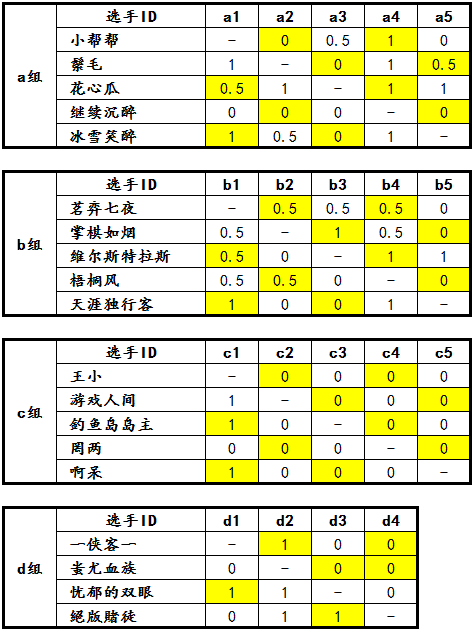

“西北狼”杯第一届博弈规则论坛战7月15日～7月19日战报
#1 “西北狼”杯第一届博弈规则论坛战7月15日～7月19日战报 作者：屏蔽 发表时间：2013-7-20 8:25:10
“西北狼”杯第一届博弈规则论坛战截至发稿时已经进行了10天。昨天晚上，随着鬃毛取胜小帮帮，预赛循环赛a组对局全部结束，b、d组尚余1盘对局未完成，c组进展较为缓慢，尚余7盘对局未完成。
在近5天的比赛中，不得不提到另一件可能比比赛本身更加吸引眼球的事情：7月16日当天，天涯独行客、茗弈七夜、絕版賭徒、罔两四位参赛选手各自在比赛版块内发表主题帖，以冲四、活三替走事件为契机展开了大讨论，其中涉及当事人员众多，不乏一些带有火药味的发言。此次讨论直到天涯独行客与茗弈七夜的对局结束后才逐渐平息，裁判组及组委会也在讨论过程中依据竞赛规程及版规对相关人员的诉求做出了协调与合理的解释，并尽可能地与各位选手保持一个公平、公开的交流方式。应当承认，在语言与逻辑方面激烈交锋的背后，本次讨论也为组委会、裁判组提供了很多新的想法。裁判组对此表示，一方面，选手在赛事中提出的问题、意见或建议，都在管理层内部有详细的记录和分析，这些宝贵的资料将有利于将来论坛战的进一步完善和发展；另一方面，也希望大家平心静气、享受比赛，在争论过后将注意力重新回到比赛本身之中来，继续为大家奉献精彩的对局，向大家展示自己高超的竞技水准！
a组：小组赛对局全部结束，除 a3 花心瓜 以3.5分的绝对优势晋级决赛之外，a2 鬃毛 和 a5 冰雪笑醉的积分、循小分、胜局、直胜完全一致！依据竞赛规程（五、1）项、（五、3）项、（十、1）项，裁判长制订了关于二位选手之间加赛的补充规定。加赛采用双盘制，每人一盘先手，采用与规程（六）项一致的竞赛规则，于2013年7月20日0:00准时开始计时，采用包干制，每人15天，超时判负。裁判长已经在规定的时间段内公布了双方事先确定的开局封手。目前两盘比赛已经同时展开并开始计时。在双盘加赛中取得2胜或1胜1和的选手将晋级决赛；两盘棋1胜1负的情况，取胜的对局总手数较少（计算至终局）的一方晋级决赛。1胜1负且对局总手数相等的，以及双盘加赛2和的情况，将由裁判长直接规定最终的加赛方式。虽然此次加赛不受对局奖励的约束，但本次论坛战的裁判长屏蔽已经宣布将以个人身份对加赛选手双方进行不同金币数量的赞助。让我们共同关注a组决定晋级命运的这一精彩对决吧！
b组：b3 维尔斯特拉斯 已经确定以2位的小组赛战绩晋级决赛。如果 b5 天涯独行客在与 b2 掌棋如烟 的对局中能够取胜，则会以1位晋级决赛，否则掌棋如烟将以1位晋级决赛。
c组：除 c1 王小 三连败后彻底无缘决赛之外，其他选手的对局都还在紧张激烈的进行当中！c组还有7盘对局未能结束，也是各个小组中进展最慢、看点较多的一个组别。现在看来形势依然混乱，更像是一场4进2的小组循环赛。
d组：近5天内形势没有变化，d1 一侠客一 与 d4 絕版賭徒 的对局仍在进行，只要絕版賭徒不输，絕版賭徒和 d3 忧郁的双眼 即可确定出线，万一絕版賭徒输掉对局，则三人形成2-2-2-0循环套，需要组织加赛。
分组对阵积分表根据裁判员的判罚，在每天上午更新。论坛战战报每隔5天发布一次。比赛奖励将按照实际情况随时发放，请各位选手注意查收。
［ 小丸.net 于 2013-7-20 8:30:16 时奖励此帖[金币加 100 威望加1］